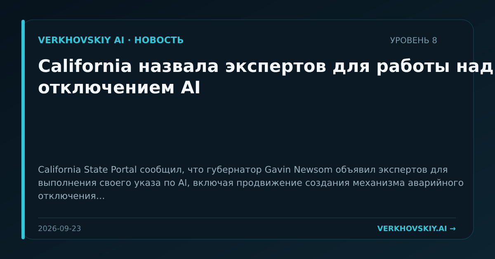

California назвала экспертов для работы над отключением AI
California State Portal сообщил, что губернатор Gavin Newsom объявил экспертов для выполнения своего указа по AI, включая продвижение создания механизма аварийного отключения. Почему это важно: Штат переводит дискуссию о безопасности AI в инженерно-административные требования к управляемости систем. Это связывает регулирование с архитектурой технологий.